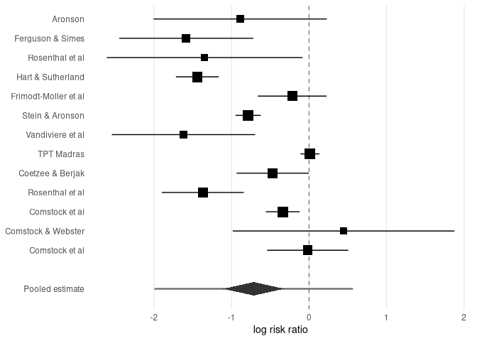

tidymetr brings meta-analysis and evidence synthesis into the tidyverse and tidymodels. Effect sizes, pooled models, meta-regressions, network meta-analyses and bias diagnostics are all tibbles, so they can be filtered, joined and plotted with the tools you already use, and every function takes the data as its first argument so it works with the pipe.
The estimators are written in base R and are checked against metafor in the test suite.
Installation
Install the development version from GitHub with:
# install.packages("pak")
pak::pak("jmozez/tidymetr")What it does
| Area | Functions |
|---|---|
| Effect sizes |
meta_effect_size() for SMD (Hedges’ g), MD, log RR, log OR, log IRR, Fisher’s z and logit proportions; meta_transform()
|
| Pooling |
meta_pool() with FE, REML, ML, DL, PM and SJ estimators, Hartung-Knapp-Sidik-Jonkman tests and prediction intervals |
| Moderators |
meta_regress(), meta_subgroup() and meta_multilevel() (three-level and phylogenetic models) |
| Networks |
meta_pairwise() and meta_network() with league tables, P-scores, design-by-treatment inconsistency and direct and indirect evidence |
| Small-study effects |
meta_egger(), meta_begg(), meta_trimfill(), meta_pet_peese() and meta_failsafe()
|
| Sensitivity |
meta_leave1out(), meta_cumulative() and meta_influence()
|
| tidymodels |
step_meta_effect_size(), step_meta_precision() and step_meta_impute_sd() for recipes; meta_leave_study_out_cv() and meta_cluster_cv() for rsample; inverse_var_rmse(), coverage_prob() and heterogeneity_r2() for yardstick; meta_linear() for parsnip |
| Output |
tidy(), glance(), augment(), predict() and autoplot() methods |
A first meta-analysis
The bcg_trials data hold the 13 trials of the BCG vaccine against tuberculosis summarised by Colditz et al. (1994).
library(tidymetr)
bcg <- meta_effect_size(
bcg_trials, "RR",
event1 = tpos, n1 = tpos + tneg,
event2 = cpos, n2 = cpos + cneg,
study = author
)
fit <- meta_pool(bcg, method = "REML", test = "hksj")
fit
#> # Meta-analysis <meta_fit>
#> # Model: random effects, restricted maximum likelihood
#> # Measure: log risk ratio; k = 13
#> # tau^2 = 0.3132; I^2 = 92.22%; H^2 = 12.86
#> # Q(12) = 152.23, p < 0.0001
#> # 95% prediction interval: [-1.9960, 0.5670]
#> # Inference: Hartung-Knapp-Sidik-Jonkman t tests (df = 12)
#> # A tibble: 1 x 7
#> term estimate std.error statistic p.value conf.low conf.high
#> <chr> <dbl> <dbl> <dbl> <dbl> <dbl> <dbl>
#> 1 overall -0.7145 0.1808 -3.952 0.001920 -1.108 -0.3206
glance(fit)
#> # A tibble: 1 x 21
#> model_type nobs method test tau2 tau2.low tau2.high tau I2 H2
#> <chr> <int> <chr> <chr> <dbl> <dbl> <dbl> <dbl> <dbl> <dbl>
#> 1 pool 13 REML hksj 0.3132 0.1197 1.111 0.5597 92.22 12.86
#> # i 11 more variables: R2 <dbl>, QE <dbl>, df.residual <int>, p.QE <dbl>,
#> # QM <dbl>, p.QM <dbl>, pred.low <dbl>, pred.high <dbl>, logLik <dbl>,
#> # AIC <dbl>, BIC <dbl>Absolute latitude explains much of the heterogeneity:
meta_regress(bcg, ~ ablat) |> glance()
#> # A tibble: 1 x 21
#> model_type nobs method test tau2 tau2.low tau2.high tau I2 H2
#> <chr> <int> <chr> <chr> <dbl> <dbl> <dbl> <dbl> <dbl> <dbl>
#> 1 regression 13 REML z 0.07635 0.01668 0.7848 0.2763 68.39 3.164
#> # i 11 more variables: R2 <dbl>, QE <dbl>, df.residual <int>, p.QE <dbl>,
#> # QM <dbl>, p.QM <dbl>, pred.low <dbl>, pred.high <dbl>, logLik <dbl>,
#> # AIC <dbl>, BIC <dbl>Small-study effects and sensitivity checks take the same data or the fitted model:
meta_egger(fit)
#> # A tibble: 1 x 11
#> test predictor model estimate std.error statistic df p.value
#> <chr> <chr> <chr> <dbl> <dbl> <dbl> <int> <dbl>
#> 1 Egger sei lm -2.112 1.507 -1.401 11 0.1887
#> # i 3 more variables: limit_estimate <dbl>, limit_conf.low <dbl>,
#> # limit_conf.high <dbl>
meta_trimfill(fit)
#> # Trim-and-fill adjusted meta-analysis <meta_fit>
#> # Model: random effects, restricted maximum likelihood
#> # Measure: log risk ratio; k = 14
#> # tau^2 = 0.3313; I^2 = 92.14%; H^2 = 12.72
#> # Q(13) = 154.68, p < 0.0001
#> # Studies filled on the right side: 1
#> # 95% prediction interval: [-1.9609, 0.6467]
#> # Inference: Hartung-Knapp-Sidik-Jonkman t tests (df = 13)
#> # A tibble: 1 x 7
#> term estimate std.error statistic p.value conf.low conf.high
#> <chr> <dbl> <dbl> <dbl> <dbl> <dbl> <dbl>
#> 1 overall -0.6571 0.1815 -3.620 0.003110 -1.049 -0.2650
meta_leave1out(fit)
#> # A tibble: 13 x 12
#> study estimate std.error statistic p.value conf.low conf.high tau2 I2
#> <chr> <dbl> <dbl> <dbl> <dbl> <dbl> <dbl> <dbl> <dbl>
#> 1 Aronson -0.7071 0.1940 -3.645 0.003856 -1.134 -0.2801 0.3362 93.23
#> 2 Fergus~ -0.6540 0.1814 -3.606 0.004129 -1.053 -0.2548 0.2926 92.25
#> 3 Rosent~ -0.6856 0.1887 -3.633 0.003935 -1.101 -0.2702 0.3207 92.94
#> 4 Hart &~ -0.6284 0.1819 -3.454 0.005390 -1.029 -0.2280 0.2628 90.41
#> 5 Frimod~ -0.7642 0.1919 -3.981 0.002154 -1.187 -0.3417 0.3278 92.76
#> 6 Stein ~ -0.7109 0.1997 -3.559 0.004482 -1.151 -0.2712 0.3596 90.91
#> 7 Vandiv~ -0.6552 0.1808 -3.624 0.003997 -1.053 -0.2573 0.2930 92.28
#> 8 TPT Ma~ -0.7948 0.1823 -4.360 0.001137 -1.196 -0.3935 0.2732 87.03
#> 9 Coetze~ -0.7412 0.1969 -3.764 0.003133 -1.175 -0.3078 0.3495 93.21
#> 10 Rosent~ -0.6530 0.1867 -3.498 0.004988 -1.064 -0.2421 0.2987 92.23
#> 11 Comsto~ -0.7579 0.1955 -3.877 0.002576 -1.188 -0.3276 0.3405 91.81
#> 12 Comsto~ -0.7598 0.1789 -4.247 0.001372 -1.154 -0.3661 0.3082 92.68
#> 13 Comsto~ -0.7775 0.1855 -4.191 0.001509 -1.186 -0.3692 0.3037 92.34
#> # i 3 more variables: H2 <dbl>, QE <dbl>, p.QE <dbl>
autoplot(fit, type = "forest")
Network meta-analysis
pw <- meta_pairwise(smoking_cessation, study = study, treatment = trt,
measure = "OR", event = xi, n = ni)
nma <- meta_network(pw, study = study, treat1 = treat1, treat2 = treat2,
reference = "no_contact", small_values = "bad")
nma
#> # Network meta-analysis <meta_nma>
#> # Model: random effects, restricted maximum likelihood; reference: no_contact
#> # Measure: log odds ratio; 24 studies, 4 treatments, 8 designs
#> # tau^2 = 0.4502; Q(23) = 202.62, p < 0.0001
#> # Inconsistency between designs: Q(7) = 15.22, p = 0.0333
#> # A tibble: 4 x 6
#> treatment estimate std.error conf.low conf.high pscore
#> <chr> <dbl> <dbl> <dbl> <dbl> <dbl>
#> 1 no_contact 0 NA NA NA 0.04111
#> 2 grp_counseling 0.8687 0.3721 0.1395 1.598 0.8474
#> 3 ind_counseling 0.7090 0.1953 0.3263 1.092 0.7155
#> 4 self_help 0.3972 0.3286 -0.2470 1.041 0.3960
tidy(nma, type = "inconsistency")
#> # A tibble: 3 x 4
#> source Q df p.value
#> <chr> <dbl> <int> <dbl>
#> 1 total 202.6 23 1.078e-30
#> 2 within designs 187.4 16 2.754e-31
#> 3 between designs 15.22 7 3.328e- 2tidymodels
Effect sizes can be computed inside a recipe, models can be tuned with study-level resampling and scored with inverse variance metrics:
library(parsnip)
folds <- meta_leave_study_out_cv(bcg, study = author)
folds
#> # Leave-one-study-out cross-validation
#> # A tibble: 11 x 2
#> splits id
#> <list> <chr>
#> 1 <split [12/1]> Aronson
#> 2 <split [12/1]> Ferguson & Simes
#> 3 <split [11/2]> Rosenthal et al
#> 4 <split [12/1]> Hart & Sutherland
#> 5 <split [12/1]> Frimodt-Moller et al
#> 6 <split [12/1]> Stein & Aronson
#> 7 <split [12/1]> Vandiviere et al
#> 8 <split [12/1]> TPT Madras
#> 9 <split [12/1]> Coetzee & Berjak
#> 10 <split [11/2]> Comstock et al
#> 11 <split [12/1]> Comstock & Webster
meta_linear(engine = "reml") |>
fit(.yi ~ ablat, data = bcg) |>
predict(new_data = data.frame(ablat = c(15, 45)), type = "pred_int")
#> # A tibble: 2 x 2
#> .pred_lower .pred_upper
#> <dbl> <dbl>
#> 1 -0.8093 0.4392
#> 2 -1.670 -0.4464Data
| Dataset | Description | Source |
|---|---|---|
bcg_trials |
BCG vaccine trials | Colditz et al. (1994) |
stroke_los |
Length of hospital stay in stroke units | Normand (1999) |
adherence_cor |
Conscientiousness and medication adherence | Molloy et al. (2014) |
school_calendar |
Modified school calendars and achievement (three-level) | Konstantopoulos (2011) |
smoking_cessation |
Smoking cessation interventions (network) | Hasselblad (1998) |
See the help page of each dataset for the full citation.
Companion advisor
tidyvisor is an optional companion advisor for tidymetr. It is not required to use this package.